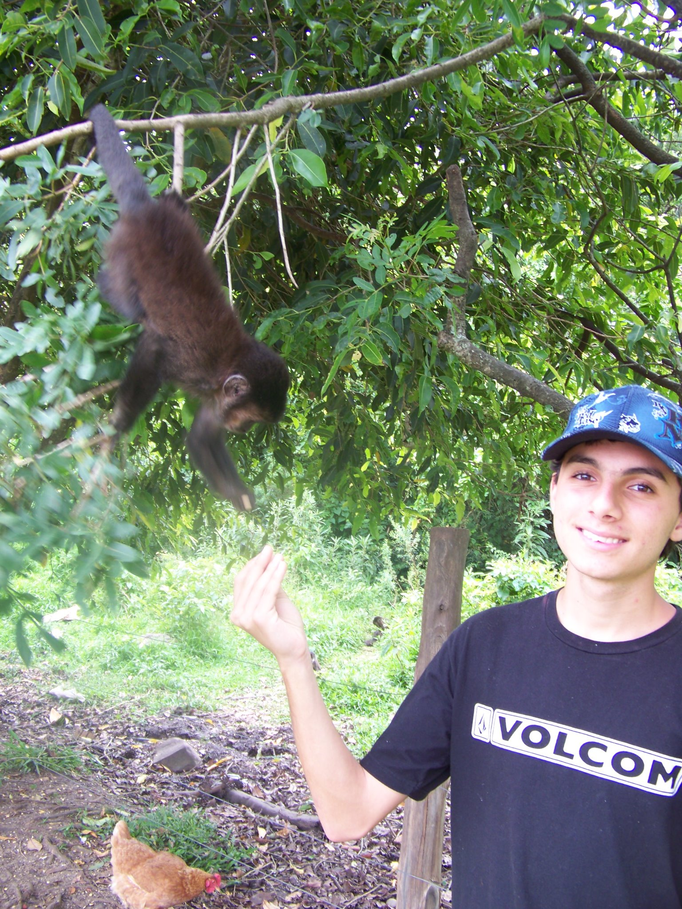

I'm Justin Bishay! I am currently pursuing a BS in Computer Science at the University of Hawaii at Manoa, and I expect to graduate in Spring of 2019.
I am a passionate gamer and have enjoyed playing various titles and genres of video games ever since I was a child. Now, I am aspiring to become a game developer so that I may create games that are entertaining and memorable for all types of gamers.
During my studies, I have worked on game design and gaming-related projects. I am also a part of the Laboratory of Advanced Visualization and Applications (LAVA) where I work on other data visualization projects as well.
Outside of the world of technology, I work as a coach for cross-country and track and field at my former high school, Mid-Pacific Institute. I play the guitar as a hobby as well.
Please refer to my resume for more about my professional experience and contact information.